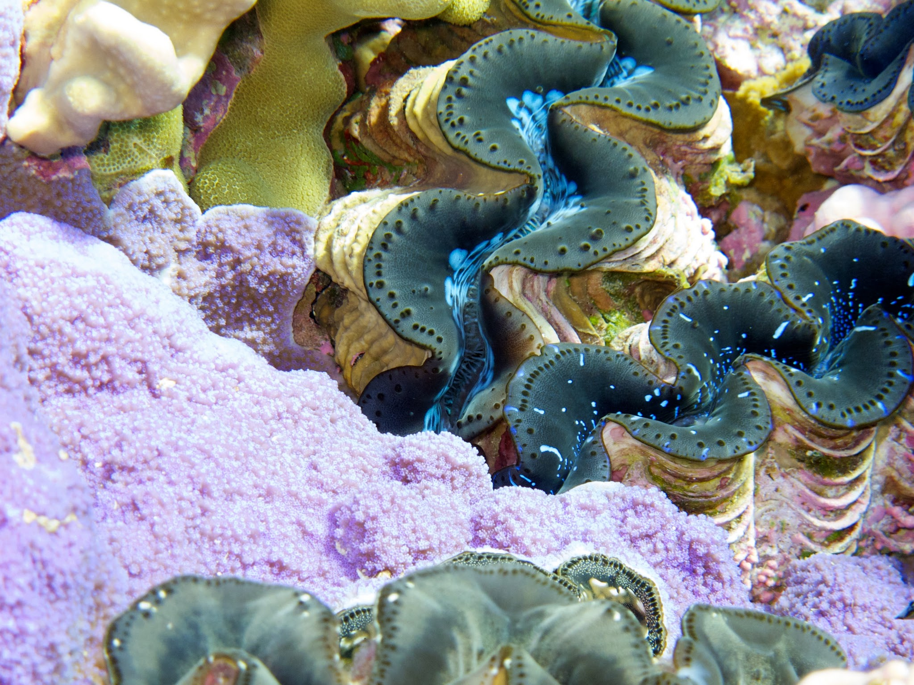

CORAL
REEFS
Occupying less than one percent of the surface of the world’s ocean (about half the size of France), coral reefs are home to more than one quarter of all marine species. Reefs themselves are made up of colonies of tiny invertebrate animals called corals, and they are home to countless tiny crustaceans, colourful sponges, and vibrant fish. In films like Finding Nemo, coral reefs are portrayed as colorful, happy and healthy strongholds of marine life, but their very existence is threatened by warming waters, acidifying oceans and overfishing. In addition to providing homes for Dory, Nemo (Amphiprion percula) and thousands of other animals, reefs also protect coastlines, provide food and bring tourism. Unfortunately, the ability of reefs to provide these essential services to humans is increasingly difficult. Protecting reefs from these dangers is therefore critical because doing so also safeguards the biodiversity, services and livelihoods that reefs sustain.
-

Coral Reefs
Despite a small footprint, coral reefs are home to 30% of all ocean species
“Everyone, everywhere is inextricably connected to and utterly dependent upon the existence of the sea”
–Sylvia Earle
Some of the world’s highest reef biodiversity - the variety of life in a particular habitat - is found in Indonesia and the Philippines. Indonesia alone holds a staggering 17% of the world's total coral reef. In both countries, millions of people are employed in fish-dependent industries. It makes good sense that these two nations should lead the charge of aquarium fish exports globally. Of aquarium fish coming into the United States (the world’s largest importer of fish destined for aquariums), a whopping 56% come from the Philippines and 28% from Indonesia. Unsurprisingly, these island nations export more Nemo’s and Dory’s than anywhere else. This part of the world is where our National Geographic team began our expedition, to trace the Dory trade back to its roots.
While fish like Nemo are easy to breed in captivity to keep pace with aquarium demand, the same cannot be said for Dory. Blue tangs are pelagic spawners, they need an open ocean to lay their eggs directly into the water which are then dispersed by currents and fertilized. Accordingly, most Dory’s are wild-caught for direct import to the United States, or they are captured at a small size and raised in captivity until they reach their most marketable life stage. It is at this point that Dory – a young, brightly-colored and captivating reef fish – leaves her home and enters the first phase of the aquarium trade: collection. Whether wild or raised blue tang populations can meet the demand of aquarists is unknown, as are the ecological consequences of this global transaction.
-

Coral Reef Placeholder
Text on reefs -

Coral Reef Placeholder 2
Text tk -

More Reefs
More placeholder -

Last Reefs
More placeholder